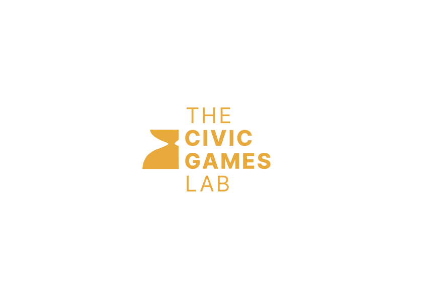
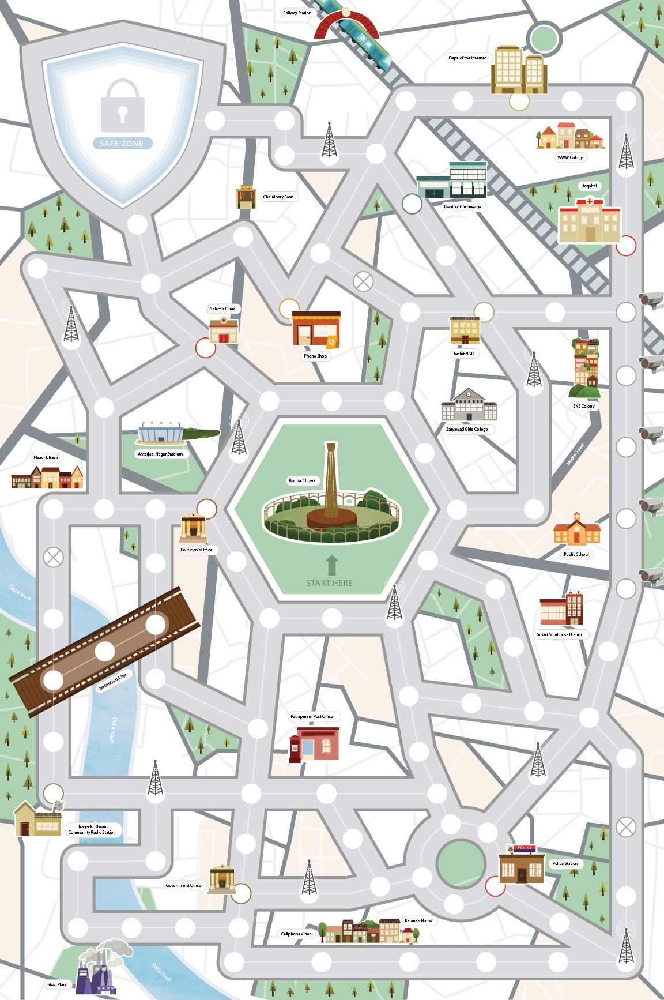
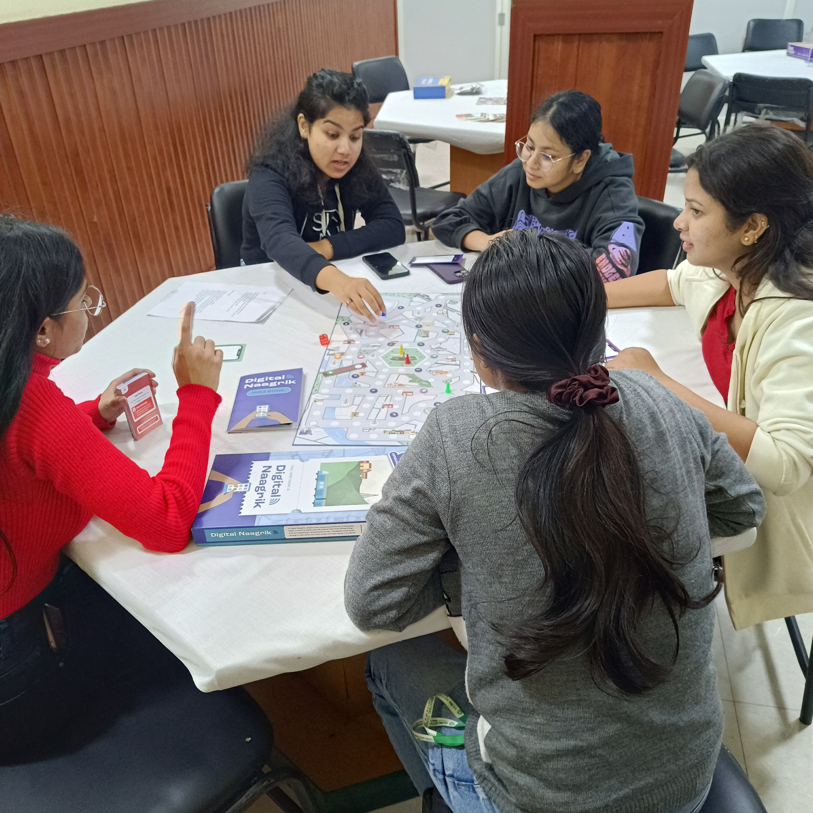

Digital · Geopolitics
Spliternet
A rules-based simulation of internet fragmentation, digital sovereignty, and cross-border governance trade-offs. Published with the rulebook title Balkanized.


A rules-based simulation of internet fragmentation, digital sovereignty, and cross-border governance trade-offs. Published with the rulebook title Balkanized.
About the game
Splinternet simulates the fragmentation of the global internet into sovereign networks. Players take on roles as nation-states, platform actors, or multi-stakeholder groups navigating competing pressures of security, commerce, human rights, and digital sovereignty across a fractured digital world.
As internet governance moves from an open, interoperable ideal towards competing national and commercial architectures, Splinternet gives players a framework to understand the forces driving fragmentation, the choices available to different actors, and the consequences for information access, trade, and democratic governance.
01 — Design
The game emerges from sustained engagement with the field of internet governance — tracking policy signals, regulatory shifts, and geopolitical pressure points across the US, EU, China, India, and the Global South. Design workshops were run with technologists, policy practitioners, and civil society actors.
The core research question: what does it feel like to be a decision-maker inside internet governance? What are the real incentives and trade-offs that produce fragmentation — and what makes cooperation difficult even when it is in every actor's interest?
02 — Development
A rules-based multi-stakeholder simulation. Players are assigned roles — nation-states with different internet governance models, platforms balancing commercial and regulatory pressure, civil society actors defending rights and access.
Nation-states (open, sovereign, fragmented governance models), platform actors, civil society organisations, and international standards bodies. Each role has distinct incentives, veto powers, and alliance options.
Negotiation, coalition-building, and strategic decision-making across rounds simulating internet governance pressure points — data localisation, platform liability, content moderation standards, infrastructure access.
Published under the title Balkanized. The rulebook structures the governance fiction and actor logic — readable as a standalone document after the session ends.
Facilitated group play for 8–24 participants. 3–4 hours. Can run standalone or as an anchor module within a broader policy workshop or training programme.
03 — Deployment
Splinternet is designed for institutional deployment — policy institutes, universities, think tanks, civil society coalitions, and government training settings.
Run as a facilitated session during strategic convenings and foresight workshops on digital regulation and platform governance.
Integrated into internet governance, international relations, and public policy curricula as an experiential learning module.
We train facilitators to run independently. The rulebook is the transfer artefact — no prior training required to read it.
Outcomes
Participants leave with a working vocabulary of internet governance — not as abstract theory but as lived decision experience.
Data localisation, platform liability, DNS sovereignty — terms become usable, not just readable.
Playing a nation-state or platform builds intuition for incentives that are otherwise invisible from the outside.
Participants understand why alliances form, why they break, and where cooperation is structurally impossible.
Decisions made during the simulation surface real trade-offs that carry back into professional contexts.





Run Splinternet with your team, institution, or programme. We facilitate, or we train your facilitators to run it independently.
Get in touch →